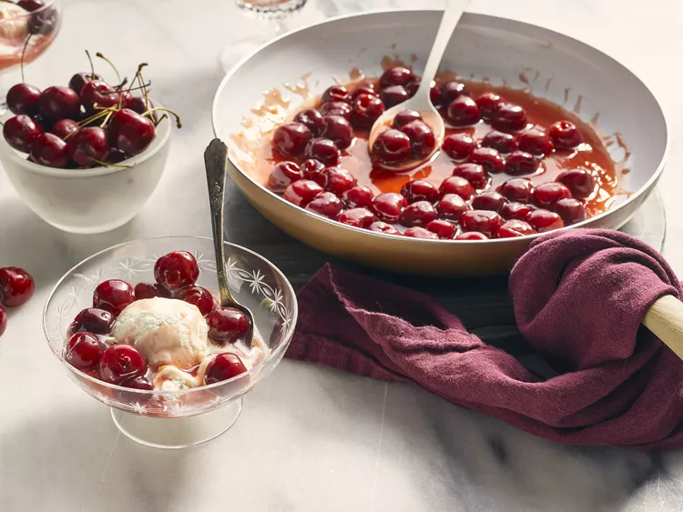

King Crab Appetizers

Description
Cherries jubilee is a refreshing dessert, especially after a hearty meal. This does have to be prepared immediately before serving, but does not take a lot of time. Your guests will enjoy the blue flames when the brandy is ignited!
Ingredients
- White sugar
- Cornstarch
- Water
- Orange juice
- Sweet cherries
- Orange zest
- Ice cream
- Cherry extract
- Brandy
Steps
- Whisk sugar and cornstarch together in a wide saucepan. Stir in water and orange juice; bring to a boil over medium-high heat, whisking until thickened. Stir in cherries and orange zest; return to a boil, then reduce heat, and simmer for 10 minutes. While cherries are cooking, spoon ice cream into serving bowls.
- Remove cherries from heat and stir in cherry extract. Pour in brandy and ignite with a long lighter. Gently shake the pan until blue flame has extinguished itself. Spoon cherries over ice cream.
Home